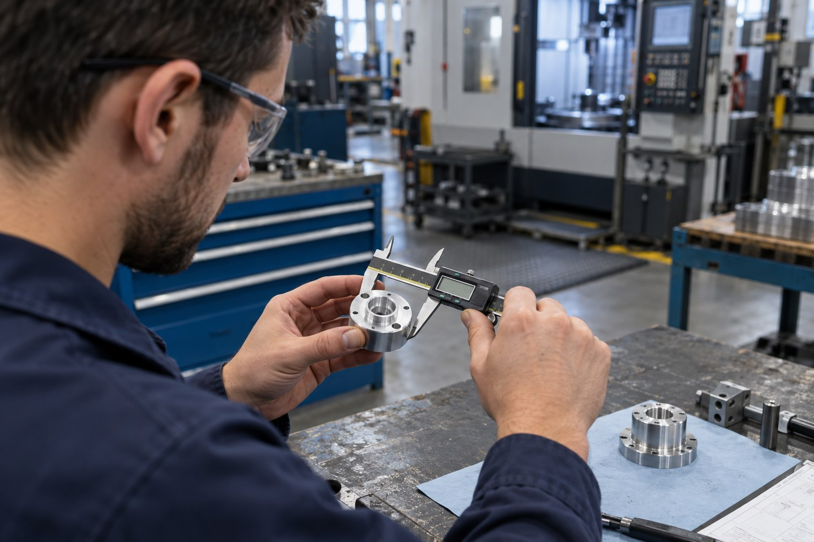

Documentos
Revisões, aprovações, vigência e histórico de versões.

SISTEMA MODULAR DE GESTÃO DA QUALIDADE
Documentos, pessoas, equipamentos e ações conectados. Organize a rotina da qualidade e acompanhe o que precisa acontecer, do registro à evidência.
Comece pelo que sua empresa precisa. Expanda no mesmo ambiente.
Módulos combináveisEscolha por onde começar
Para conhecer o sistemaCom dados demonstrativos
Para acessar o testeCadastro no site oficial
UM SISTEMA. DIFERENTES NECESSIDADES.
Não é preciso contratar tudo. Combine os módulos que fazem sentido para sua rotina e adicione outros conforme a operação evolui.
ENCONTRE UM PONTO DE PARTIDA
O que você precisa organizar?
Os 14 módulos estão disponíveis abaixo.
Ir aos módulos destacados ↓Revisões, aprovações, vigência e histórico de versões.
e-Forms versionados, histórico dos campos e exportação CSV.
Participantes, presença, avaliação e certificados.
Programa, checklist, constatações, evidências e relatório.
Impacto, causa, ações e verificação de eficácia.
Ações corretivas e preventivas com responsáveis e prazos.
Impactos, avaliações, aprovações e acompanhamento da eficácia.
Instrumentos, periodicidade, registros e certificados.
Planos, ordens, execução e histórico dos equipamentos.
Leituras por API autenticada, alertas e histórico.
EVOLUIR
Riscos, resultados e relacionamentos fazem parte da mesma gestão.
Matriz, controles, tratamento e reavaliação.
KPIs, metas e resultados da Qualidade por período.
Homologação, evidências, criticidade e requalificação.
Interações, satisfação e requisitos ligados à Qualidade.
DO RECURSO À ROTINA
Três situações para entender o problema, os módulos envolvidos e como o Lacius pode apoiar cada etapa.
ESCOLHA UMA ROTINA
O que você quer conhecer na prática?
Mostrando: Documento revisado.

Uma nova revisão exige controle da versão e alinhamento de quem usa o documento. O Lacius organiza revisões, aprovações e vigência; os treinamentos podem ser relacionados aos documentos da rotina.
EXEMPLO · PROCEDIMENTO DE INSPEÇÃO
Registre a nova revisão e mantenha o histórico das versões anteriores.
Controle a aprovação e a vigência da versão que será usada pela equipe.
Vincule o treinamento ao documento e organize participantes, presença e avaliação.
Nos registros eletrônicos, consulte o modelo usado, o histórico dos campos e os arquivos associados.
Versão, capacitação e registros com mais contexto.
Um achado precisa de evidência, análise da causa e acompanhamento. O Lacius permite relacionar a auditoria à não conformidade, acompanhar ações e verificar se a solução funcionou.
EXEMPLO · REGISTRO SEM IDENTIFICAÇÃO
O checklist aponta registros de inspeção sem identificação do lote.
Relacione a ocorrência à auditoria e registre seu impacto e sua causa.
Defina responsáveis e prazos para corrigir o preenchimento dos registros.
Confira se a ação resolveu o problema antes de considerar a tratativa concluída.
Do achado à verificação, sem perder a origem do problema.
Acompanhe leituras, alertas e controles dos equipamentos. O Monitoramento recebe dados por API autenticada; Calibração e Manutenção organizam os instrumentos e seu histórico.
EXEMPLO · LEITURA DE UM SENSOR
Um sensor compatível envia os dados por uma integração com API autenticada.
Acompanhe as leituras registradas, os alertas e os períodos sem recebimento de dados.
Um alerta pode abrir uma não conformidade para acompanhamento do problema.
Consulte periodicidade, registros e certificados de calibração, além de planos, ordens e histórico de manutenção.
A compatibilidade de sensores e equipamentos precisa de avaliação técnica.
Fluxos ilustrativos, não capturas da interface real. Baseados na apresentação oficial do produto ↗. A sequência não representa uma automação garantida entre todos os módulos.
ANTES DE COMEÇAR
O essencial sobre os módulos, o teste e os limites do produto.
É um sistema modular para organizar a Gestão da Qualidade. Reúne documentos, registros, treinamentos, não conformidades, auditorias, equipamentos, fornecedores, clientes e indicadores.
Não. A empresa pode escolher os módulos necessários e adicionar outros depois no mesmo ambiente, mantendo usuários, dados e rastreabilidade conectados.
O ambiente fica disponível por 21 dias, com os 14 módulos liberados, dados demonstrativos, acesso imediato e sem necessidade de cartão de crédito.
Não. O sistema apoia as rotinas do Sistema de Gestão da Qualidade, a rastreabilidade e a geração de evidências, mas não garante certificação, aprovação regulatória ou conformidade da empresa por si só.
A migração é avaliada caso a caso, conforme formato, qualidade e volume dos dados. Não há confirmação de importação automática para qualquer planilha ou sistema.
CONHEÇA COM A SUA EQUIPE
Explore os 14 módulos com dados demonstrativos.
Teste de 21 dias, sem cartão, conforme as condições do site oficial.